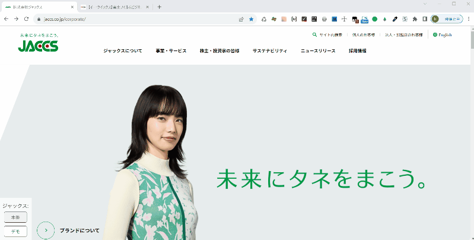
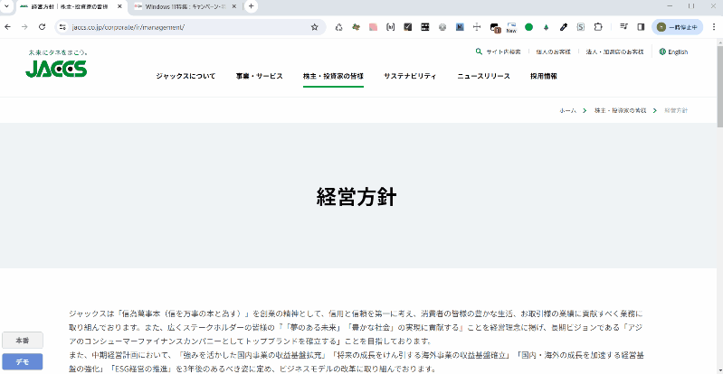

ユーザースクリプト一覧
個人的に開発したユーザースクリプトをまとめています。ツールに応じて適宜必要な設定を行いご利用ください。
-
※ユーザースクリプトの説明についてはここでは割愛します。詳しくは、UserScript（ユーザースクリプト）の概要と使い方などをご参照ください。
-
新規タブ&ドメイン切り替えツール
特定のドメインを含むWebページに訪れた際に、異なるドメインに差し替えて新規タブで開くボタンメニューを表示するツールです。
利用シーン：現在表示中のページを異なるドメインで参照・比較したいときなどの使用を想定しています。
- ドメイン切替対象ページの場合、画面左下にドメインを切り替えられるボタンメニューを表示します。
- ボタンは
domainButtonsのドメイングループごとに設定したドメイン数だけ自動的に表示されます。 - 表示中のドメインと同一のドメインボタンは非活性になります。
- 切り替えられるドメインはグループごとに設定し、1つのドメイングループにつき複数のドメインを設定可能です。
- 本ツール単体で複数の切替えドメイングループを設定可能です。
 -
ドメイン切り替えツール
特定のドメインを含むWebページに訪れた際に、数字キーをクリックすると異なるドメインに切り替えるツールです。
利用シーン：ドメイン切替ツールをメニュー非表示の状態で使用したい場合を想定しています。
- 新規タブではなく同一タブで切り替わります。
- 切り替えられるドメインはグループごとに設定し、1つのドメイングループにつき最大9個のドメインを数字キー（1~9）に割り当てることが可能です。
- 本ツール単体で複数の切替えドメイングループを設定可能です。
-
※切替の際に数字キーを使用するため、他にページ内で同ボタンへの入力やショートカットを割り当てている場合は注意してください。
